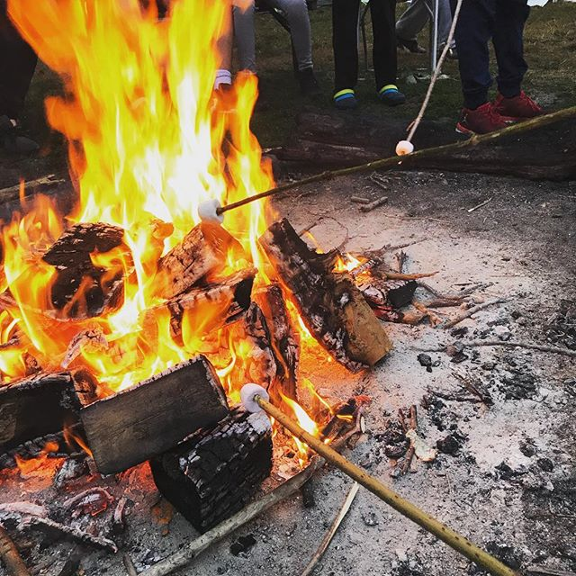

Prospex Camp-Out
Our Summer Programmes for this year involve a Prospex members camp-out, during this time attendees will learn how to create their own sustainable fires, in order to prepare a meal for their fellow camp-mates.
We have previously had success with this summer programme, in the running up to the camp-out, members learn how to pitch their own tents engaging with other members for those who need extra support.This helps create an environment where people do not feel isloated.
As well as this, we help prepare the campers to make sure that they have all the essentials, we provide most of the materials.
We also teach the members basic orienteering, this is an activity that everyone takes part in when on the campsite, they are given a map with marked points on it - this will lead them to different clues, and eventually finding their way back to the start.